Orders
This screen gives access to all upcoming warehouse orders that are available for execution.
They are distributed into five sections and sorted in an ascending order in each.
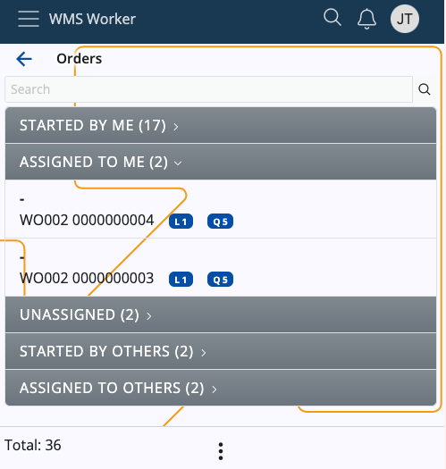
Search and totals
Above the sections, there is a search bar that can be used to filter the existing orders.
You can search by scanning or entering an order number, a party name (if any), or any information set up by Order display format
For reference, the Total number of orders can be checked at the bottom-left corner of the page.
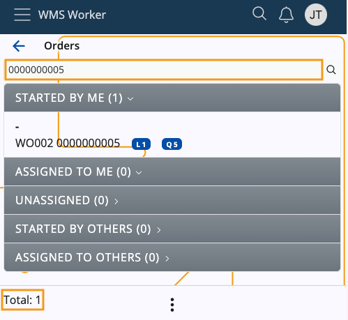
Context menu
The Orders screen features a Context menu, accessible through the three-dot button at the bottom.
It allows you to execute the following actions:
Refresh - When triggered, it will instantly refresh the contents of the page, taking into account orders previously not added and dismissing the ones that have been voided.
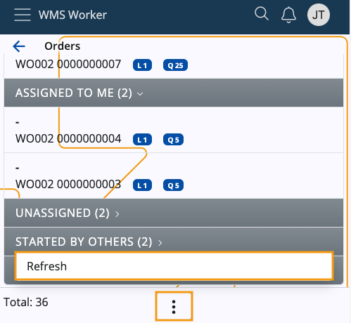
Order details
Once you open an order, you can see the following details about it:
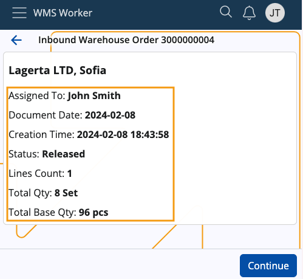
- Order Display Format - the same Display format from the orders list
- Assigned To - the Worker to which the order is assigned
- Document Date - the date of the order
- Creation Time - the time and date of creation of the order
- Status - the status of the order
- Lines Count - the number of the order's lines
- Total Qty - the sum of product quantities; if there are lines in different measurement units, there will be separate totals for each unit
- Total Base Qty - the overall quantity of individual products, grouped according to the respective measurement unit (e.g. 8 sets total qty equals 96 pcs base qty).
Section breakdown
The Orders screen consists of the following sections:
Started by me
These are all the Released warehouse orders which are assigned to the currently logged-in user.
Assigned to me
Contains Planned and Firm Planned orders which are assigned to the currently logged-in user.
Unassigned
Contains Planned and Firm Planned orders which are not assigned to a specific worker and can be executed by anyone who takes them.
Started by others
Here, you will find all Released orders which are assigned to users different from the currently logged-in one.
Assigned to others
Contains Planned and Firm Planned orders which are assigned to users different from the currently logged-in one.
Action buttons
When accessing an order, different buttons will be visualized based on the section you access the order from.
They indicate the action you're able to perform. Clicking some of them will result in the order being moved to a different section.
Started by me
Accessing an order from here reveals general information about it, as well as a dedicated Continue button.
Upon clicking it, you'll open the order and will be able to continue with its processing.
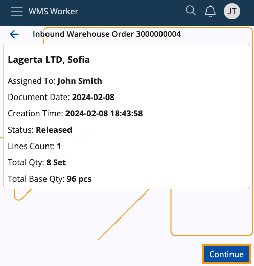
Assigned to me
Accessing an order from here reveals general information about it, as well as a dedicated Start button.
Upon clicking it, the order will be released and opened.
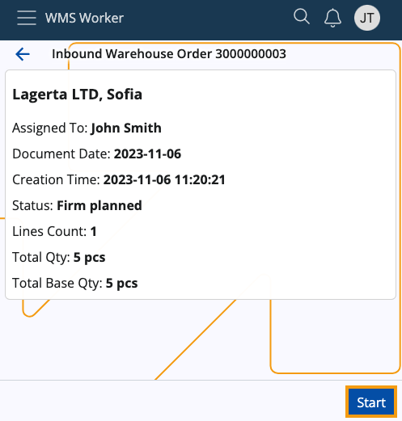
Unassigned
Accessing an order from here reveals general information about it, as well as a dedicated Take & Start button.
Upon clicking it, the order will be assigned to you, released and opened.
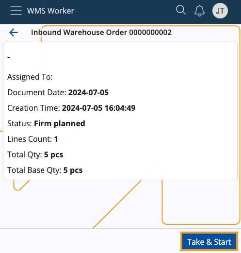
Started by others
Accessing an order from here reveals general information about it, as well as a dedicated Join button.
Upon clicking it, you'll open the order.
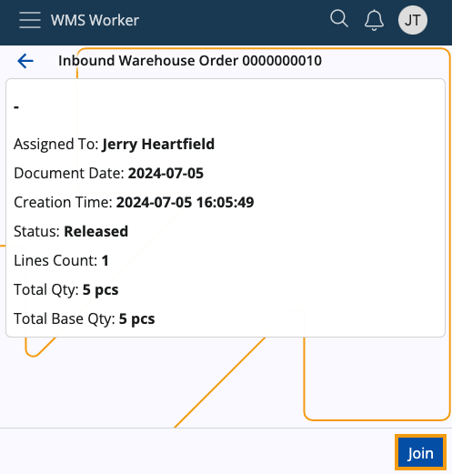
Assigned to others
Accessing an order from here reveals general information about it, as well as a dedicated Take & Start button.
Upon clicking it, the order will be re-assigned to you, released and opened.
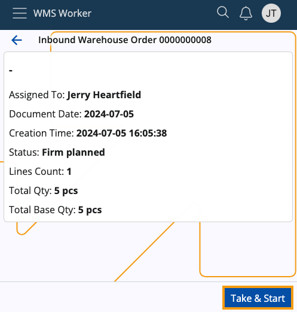
Policies for order section visibility
There are three warehouse policies determining which sections can be seen and which will remain hidden.
They apply for the entire store, not taking into account any provided zones, products, or other filters.
Here's a brief summary of each:
Unassigned Orders Section Visibility - covers the "Unassigned" section
- If set to True, the section will be visible for all workers defined for the respective store
- If set to False, it will be hidden from them
- If a policy is not specified, the section will be revealed by default.
Started by Others Section Visibility - covers the "Started by others" section
- If set to True, the section will be visible for all workers defined for the respective store
- If set to False, it will be hidden from them
- If a policy is not specified, the section will be revealed by default.
Assigned to Others Section Visibility - covers the "Assigned to others" section
- If set to True, the section will be visible for all workers defined for the respective store
- If set to False, it will be hidden from them
- If a policy is not specified, the section will be revealed by default.
Note
For more information about these policies, please refer to Warehouse policies.
Order lines
Once an order is taken, started, continued or joined, a summary of its lines will show up:
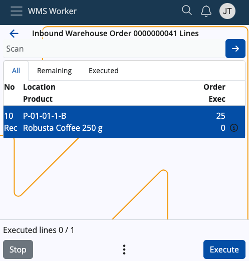
On this screen, you will find three tabs dedicated to line execution:
- All - shows all lines of the order regardless of whether they have been executed or not
- Remaining - shows rows that have not yet been executed
- Executed - shows the rows that have already been executed
All lines contain information about the requested product and its quantity.
No - shows the line number and its associated task (e.g. Receive)
Location - shows the location of the product
Product - shows the product itself
Order/Exec - shows what quantity of the product needs to be procured compared to what quantity has already been executed
A check mark will appear on the right of the Order/Exec counter only if the line is fully executed.
More details about each line, e.g. the full name of the product, the ordered lot, variant, serial number, etc. can be accessed via the line's respective info button. If an execution has already taken place, the Info screen will include details about it as well.
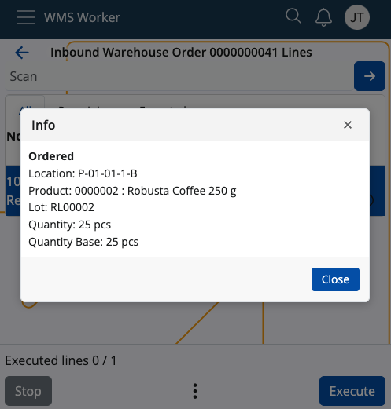
At the top of the screen, there is a general Scan field.
When scanning a value in this field, a matching unexecuted line is searched through the lines list. If such a line is found, its execution is started automatically.
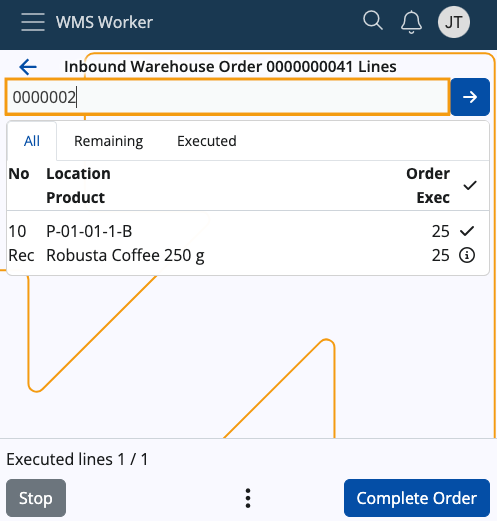
Note
The scanned value recognition is done by Barcode Parsers such as Product Code and GS1 - Single Product.
The list of currently active parsers can be seen by accessing the vertical three-dot Menu button at the bottom of the app.
Order line actions
At the bottom of the screen, there are buttons for managing the order:
Stop - terminates the order
Execute - allows for line execution; will change to Complete Order when all lines have been executed
Menu - allows access to several additional functions like:
Refresh, which will instantly refresh the contents of the order
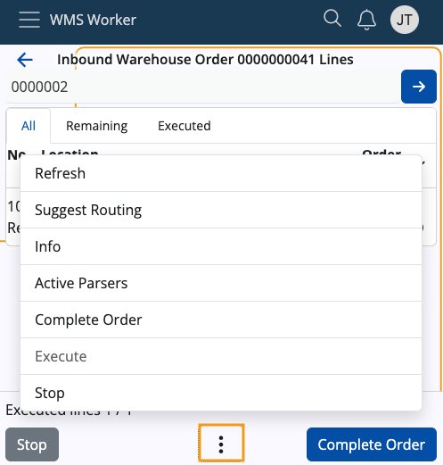